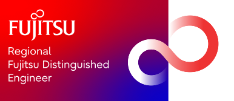

Garrard Kitchen
Please click here to view my resumes and reference.
Certifications
These are my Azure, HCL, Linux Foundation and AWS certificates:

Microsoft Certified: Azure Developer Associate

Microsoft Certified: DevOps Engineer Expert

Microsoft Certified: Azure Solutions Architect Expert

Microsoft Certified: Azure IoT Developer Specialty

Microsoft Certified: Azure Security Engineer Associate
")
HashiCorp Certified: Terraform Associate (003)

LFC131: Green Software for Practitioners
AWS Developer Associate
AWS Solutions Architect
Current position
-
Cloud Native Lead @ Fujitsu
-
Awarded the title of Fujitsu Distinguished Engineer (2024)

-
Fujitsu FUSION/Applications co-lead
FUSION is our technical community network designed to break down silos across teams, connect people, and unlock technical knowledge from across Fujitsu.
-
Delivered talks on:
- What is CI/CD
- Test automation with MS Playwright and Azure Functions (C#, TS)
- Models as Code
- Sustainability Transformation (NDC, London ‘23)
- Modern CI/CD
- .NET Aspire, the inner loop and the Azure Developer CLI (‘AZD’)
-
Blogging
-
Mentoring
-
Early Careerstechnical skills assessor -
Collaborating with multiple clients using Azure and HCL solutions
-
Contributing DevSecOps expertise to support our proposal development
-
Some of the projects I have worked on for clients are:
- Lead for Microsoft Team integrated intelligence in the digital workplace
- Architected and developed secure AI Agents (Azure AI Foundry) & MCP Servers using .NET Core, .NET Aspire and Dapr
- Demystified Azure Landing Zones and created a Framework (ALZIF) that delivers a scalable, secure, and modular foundation for deploying and managing cloud environments in Azure, aligning with best practices and organizational requirements.
- Designed and built a Power App that connects to a backend .NET 8.0 C# API Azure Container Application using a Custom Connector, OAuth 2.0 and Entra ID. The backend API is secured by an APIM API that validates JWT tokens, including pre-authorize requests. I used Azure DevOps and AZD to deploy and manage the Power App, the backend API and the supporting infrastructure.
- Developed a remote state solution for Terraform that uses Azure Blob Storage with no public access, no Shared Access Keys and no public blob access. I used MSI and Private Endpoints to enable secure communication.
- Designed and delivered a Release Flow branching strategy that matches the customer’s release cycle and change request process, while reducing environmental impact and carbon emissions.
- Led the implementation of Scrum practices, such as Retrospectives and Blameless Post-Mortems, to enhance team collaboration and efficiency.
Previous positions
- Head of Cloud Platform @ Carfinance247
I am leading the digital transformation of Carfinance 247, where our infrastructure and hosting platforms are outdated. I am using the Azure Cloud Adaption Framework to help modernize our web applications, APIs (some microservices, mostly coarse-grained RESTful services), and workers. I have a lot of experience and enthusiasm for the cloud. I have always followed a Cloud First and Serverless approach on both the Azure and AWS cloud platforms. I am passionate about cloud-native, twelve-factor apps, patterns, standards, and their benefits for the enterprise and small business. I enjoy working with cloud providers the most.
I have created our new platform using AKS clusters as part of the digital transformation effort. I have devised our CICD strategy to update our legacy .NET Framework, .NET Core and NodeJS workloads and to migrate them to the Azure cloud. I have done this while simplifying the process and reducing mental load. To support our new platform, I have designed and built a Hub & Spoke network topology that allows us to securely access resources behind private endpoints from our corporate network, and to resolve DNS names between Azure and our on-prem DCs. I lead a small but experienced team.
These are the technologies and backing services that I am introducing and leading at CF247, as well as working with and managing daily:
- Cloud Architecture
- Azure Administration (Excl AAD)
- AKS
- Helm
- Azure Bicep
- GHA Workflows
- AzDevOps
- Azure Compute, VMSS
- Azure Private Endpoints, Private DNS Zones, Networking and Azure FW
- Azure Functions, Event Hub, Event Grid (System & Custom), Service Bus, Storage (inc. Queue, Table, Files), LogicApps, App Services & Plans, KeyVault, App Configuration, CosmosDB, SaaS (Logz & Kafka), Azure Container Registry
- Microsoft Defender for Cloud, Advisor
- Azure Blueprints
- Azure Policy
- Azure Application Insights & Monitor, Alerting, Kusto QL
- Logz.io (grafana, kibana) - researched and integrated, replacing our legacy unstable ELK stack
- Azure Managed Identity (.NET & NodeJS SDKs, System & User)
- RBAC
- C#, .net 3.1 & 6, .net framework 4.8
- Steering MS FastTrak programmes including SQL Server AG migration
- Cloudflare & API v4 (DNS, Monitors, Pools and LBs)
Previous position
Principal Engineer @ Carfinance247
Click here to see projects worked on while at Carfinance247
Reporting directly to the DoE (Director of Engineering), I collaborate with different teams to teach, support and advise them. I also participate in the current sprint. I work on side projects and PoC (proof of concept) projects. I have given presentations on AWS & Google Serverless services. I help to define HLA, enhance coding quality and engineering standards. I am a team player and assist my colleagues and CF247 operations whenever needed. I offer direction and guidance on cloud computing, cloud architecture and development. I am cloud-first, a polyglot, and a supporter of serverless technologies.
After doing research and implementation on several projects using the NestJS NodeJS framework, I delivered a technical talk in Manchester - meetup - on the NestJS framework, Dapr and KEDA in November 2020.
Previous position
Chief Technology Officer @ Qualtrak
Click here to see projects worked on while at Qualtrak Solutions
For over a decade, I have led a development team and contributed to the company’s vision. During this period, I have implemented an Agile methodology to deliver features for various products, spearheaded CI/CD projects and created an environment that enables the Technical department’s European development team to work efficiently, passionately and collaboratively.
During my time here, I developed and had publshed an AWS Quickstart AWS Quickstart and had a product available in the AWS Marketplace AWS Evalute for Amazon Connect that integrated with AWS Connect.
Other positions
BI contractor & .NET contractor
As a contractor in the Business Intelligence space, I have gained valuable experience working with GE Capital, Morgan Stanley Dean Witter, Equitas & GUS.
After graduating from University, I pursued my interest in EIS (Executive information systems), which led me to the BI field and the world of contracting. Along the way, I developed another passion: web application development. I took on various projects and challenges to hone my skills. This enabled me to acquire a wide range of competencies and expertise to offer to employers. I have enjoyed many interesting roles, culminating in my dream job as CTO.
For more than 12 years, I have been a SME (subject matter expert) in the contact centre space, a skilled systems integrator, a cloud solutions architect, a proficient serverless developer, a DevOps Advocate and a trusted technical consultant for Qualtrak, working with teams of all sizes across the globe.
Where I see my passions, and skill set, benefiting your organisation
-
I love learning new things and staying up to date with the latest technologies
-
I can guide you and your team through the migration of enterprise solutions and web-based applications to the serverless stack (saving you time, money, and resources) or containerization [App Servces, ACA and AKS], as well as help you quickly experiment with new ideas by developing and deploying features to measure customer feedback and revenue potential
-
I am passionate about serverless technologies and have been using them for years. I started with Azure functions and then explored AWS, before coming back to Azure. I believe that serverless is the best way to build modern applications for many reasons, such as:
- Speed from idea to execution
- Cost-effectiveness for you and your customers
- Reusability and scalability of components and events
- Resilience and isolation of functions
- Reduced environmental impact and carbon footprint
- Focus on the business logic and not the infrastructure
-
I have hands-on experience in designing and implementing cloud architectures of various scales that ensure business continuity and scalability
-
I have leveraged ML backend services (AWS Transcribe, AWS Comprehend) to design solutions and have built PoCs and production services using serverless technology (Azure Functions, LogicApps, Event Grid, Event Hub, AWS Lambda, AWS Step Functions, AWS API Gateway)
-
I have architected and implemented a new platform that uses Kubernetes (AKS) as its core
-
I have a strong background in AWS and certifications, but now I am fully committed to the Azure cloud platform
-
I keep researching and learning about the evolving world of serverless technologies. My current interest is WASM (OOB) and this has led me to learn Rust.
My preferred role
To tackle complex cloud-native (CN) architecture (Azure) chalenges and spearhead the CN design and implementation, develop cloud-centric or hybrid solutions, foster a DevSecOps culture, practices and tooling, mentor and shape communities and train teams on cloud skills, and drive innovation through the use of cloud technology.
I have captured most of my career timeline here in the Projects, Skills and Experience sections.
Resumes and Reference
These resumes go up to 2022
| Click here to download my 2022 resumé | |
| Click here to download my pre-2021 resumé | |
| Click here to download my reference |
Skills
- Agile
- Backlog Refinement
- Inception
- Retrospective
- Sprint Planning
- Blameless Post mortem
- Target Process
- Azure DevOps Pipelines
- GitHub Workflow Actions
- GitLab CI/CD
- Terraform
- Terraform Enterprise/Cloud
- Azure Bicep & ARM
- Terraform
- IDP - Backstage
- CloudFormation
- SonarQube/SonarCloud
- Terraform
- Vault
- Nomad
- Terraform Cloud & Enterprise
- .NET Core 8.0
- .NET Aspire
- ASP.NET Core
- NodeJS
- TypeScript
- Javascript
- AKS
- EKS
- NestJS Framework
- Dapr
- Swarm
- EDA
- CQRS
- API Gateway
- Micronaut
- Spring Boot
- ALZ ('Azure Landing Zones') (fmr Enterprise-Scale Architecture)
- CAF ('Cloud Adoption Framework')
- LZ Subscription Vending
- API Management Platforms
- BDD
- Cloud patterns
- Configuration as Code
- Design patterns - Structural, Creational & Behavioural
- DDD
- DevSecOps
- Disaster Recovery & HA
- DNS
- Firewalls
- Microservices
- Queue
- REST
- SaaS/FaaS/PaaS/IaaS
- Serverless
- SOA
- SOLID Principles
- TDD
- Multithreading
- VPC
- Webservices
- Speech analytics
- Sentiment analysis
- Emotion detection
- Big data
- AWS Lambda
- Amazon API Gateway
- AWS Step Functions
- Amazon ECS Fargate
- Amazon Aurora Serverless
- Azure Functions (including deploy to K8s)
- Azure LogicApps
- Google Cloud Run (Knative)
- Google Functions
- Serverless Framework
- Serverless Application Model
- Serverless Application Repository
- Twilio Serverless
- Power Apps
- Power Automate
- Power BI
- ActiveMQ
- Akka .NET
- Azure Event Grid
- Azure Event Hub
- Google Pub/Sub
- gRPC
- Apache Kafka
- Amazon Kinesis Data Firehouse
- Amazon Kinesis Data Streams
- Amazon Kinesis Data Analytics
- NATS
- RabbitMQ
- Redis Pub/Sub
- Azure Service Bus
- Amazon SNS
- Amazon SQS
- Azure Storage Queue
- ZeroMQ
- Amazon Aurora - MySQL
- Amazon ElastiCache - Redis
- Amazon DynamoDB
- Amazon ElasticSearch
- Azure Redis
- Azure CosmosDB
- Azure SQL Databases
- Azure SQL Managed Instaces
- CockroachDB
- CoachBase
- Firebird
- InfluxDB
- MongoDB
- MSSQL
- PostgreSql
- C#
- Blazor
- .NET Aspire 9.2
- AZD (Azure Developer CLI)
- NodeJS
- Java
- TypeScript
- Javascript
- Cluster API (nodejs)
- NestJS Framework
- Micronaut
- Spring Boot
- KEDA
- Dapr
- F#
- Python
- go
- git
- Windows
- linux
- bash
- PowerShell Core
- Windows
- Windows Server
- Flask
- Express.js
- IIS
- MSSQL
- .NET Core 2.1 - 9.0
- .NET Frameworks 4.8
- ASP.NET Core
- ASP.NET
- .NET Aspire
- TypeScript
- Razor Pages
- Blazor
- Javascript
- MS Playwright
- JQuery
- Angular
- Vue
- React
- Ajax
- Bootstrap
- CSS
- HTML5
- Silveright
- Visual Studio
- VSCode
- Rider
- IntelliJ
- PyCharm
- WebStorm
- DataGrip
- SSMS
- MySQL Workbench
- Postman
- DotTrace
- DotMemory
- ANTS Performance Pro
- ANTS Memory Profiler
- Slack
- Skype
- GotoMeeting
- Jira Cloud
- Google Docs & Keep
- Office 365
- SpecFlow (BBD)
- MS Playwright
- Jest
- Artillery.io
- Postman
- NUnit
- XUnit
- SpecFlow
- Mocha
- Cucumber
- Karma
- Chai
- Sinon
- Istanbul
- Zombie.js
- JustMock
- DotCover
- JMeter
- Locust
- loader.io - blazemeter
- Altitude
- Amazon Connect
- Comways
- DataVoice
- Dubber
- Frequentis
- Novo
- Redbox
- ServiceNow
- Spitch
- Telax
- Twilio
- Twilio Flex
- ZenDesk
- Twilio CLI
- Twilio Serverless
- Twilio Flex
- Twilio SDK
- OAuth 2.0
- OIDC
- Azure B2C
- Azure Entra Id
- Active Directory
- LDAP
- MFA
- Cognito
- VyprVPN
- PCI DSS
- Keybase
- Forms Authentication
- Windows Authentication
- JWT
- IWA
- SAML
- Azure Application Insights
- Azure Monitor
- Amazon CloudWatch
- Datadog
- Epsagon
- Grafana
- InfluxDB (Telegraf, Kapacitor, Chronograf)
- Jaeger
- Kibana
- Logz.io (Kibana, Grafana)
- NewRelic
- Prometheus
- Sentry.io
- Stackify
- ACM
- ADM
- ALB
- AMI
- API Gateway
- Athena
- Aurora
- Backup
- Cloud9
- CloudFormation
- CloudTrail
- CloudWatch
- CodeBuild
- CodeCommit
- CodeDeploy
- CodePipeline
- Cognito
- Comprehend
- Config
- Data Pipelines
- DynamoDB
- EBS
- EC2
- ECR
- ECS
- ECS Fargate
- EMR
- EFS
- Elastic BeanStalk
- ElasticCache
- ElasticSearch
- Glue
- Kinesis
- Lambda
- MarketPlace
- Metering Service
- Quick Start
- RDS
- Route53
- S3
- Simple AD
- SES
- SNS
- SQS
- SSM
- Step Functions
- Transcribe
- VPC
- WAF
- Workspaces
- X-Ray
- Azure Kubernetes Service
- Application Gateway
- Azure Functions
- Azure DevOps
- Application Insights
- Kusto query language
- Azure Container Apps
- Load Balancer
- Event Grid
- GitHub Actions
- LogicApps
- App Services
- Virtual Machines
- Key Vault
- ARM & bicep & Terraform
- Virtual Network
- VPN Gateway
- CDN
- Front Door
- Traffic Manager
- Azure Monitor
- Storge - Table, Queue, File & Blob
- Service Bus - Messaging & Relay
- VMSS - Virtual Machine Scale Sets
- Azure SignalR Service
- API Management
- Web Apps
- Event Hubs
- Azure Stream Analytics
- Service Fabric
- Web App for Containers
- Container Registry
- Container Instances
- Azure Cache for Redis
- Azure CosmosB (including MongoDB, Core SQL APIs)
- Azure Database Migration Services
- Azure Active Directory
- Azure Backup
- Cloud Functions
- Cloud Run
- Cloud Run on GKE
- Stackdriver
- Knative
- Cloud Pub/Sub
- Cloud Shell
- Compute Engine
- GKE
- Cloud Storage
- Cloud Firestore
- BigQuery
- App Engine
- Container Registry
Projects
This section lists my experience from some of the projects and initiatives I have lead. The format is short, in note form and bullet points.
Carfinance247 projects/activities:
- I have delivered brown bags on AWS serverless services and Google serverless options (Cloud Functions & Cloud Run Knative, deployed via GitHub Actions)
- I have delivered a brown bag on Microservices Architecture
- I have delivered a Town Hall, show-casing a solution that uses Twilio Serverless Functions, Twilio Flow, GitHub Actions and other cloud-based services. This presentation included a slide deck encompassing guiding principles, architecture, the technology used, culminated with a live demo
- I have helped maintain enterprise Twilio CRM using angular 1.x and supporting HTTP API microservices hosted & load balanced in docker Swarm
- I worked on a Pilot project that assessed both Google and Azure Cloud services. Some of this work, especially story spikes, required pair programming
- I have created a solution that subscribed to Azure Event Grid and Azure Service Bus (topics & queues) and used Azure SignalR Service to update a UI hosted on AKS
- I worked on the new Vehicles team, helped shape development principals and used Jenkins and Google services including GKE
- I am working with the Phoenix & Integration team to help maintain and add features to several .NET Core C# and UI git repositories
- I have created equivalent EDA in AWS (node.js, Serverless, SQS, SignalR, ASP.NET Core) from PoC written/architected using Google services in a fraction of the time plus architected the solution to deal with edge/corner cases using architecture instead of code
- I have created Bamboo build & deployment projects, as well as Azure DevOps CI/CD pipelines
- I have created as part of the GitHub/Jenkins CI/CD pipeline, .NET Core WebApplicationFactory based functional tests that span multiple docker services
- I researched and deployed (docker) Snyk for checking for code/library vulnerabilities, code quality and docker image scanning
- I have participated in multiple inceptions, helped shape HLA and define requirements
- I drew on observability experience to (a) implement/deploy Prometheus time series Db for use with (b) new Grafana dashboards (based on google’s USE & RED methods) to help monitor both infrastructure and application performance
- I am architecting a solution that uses GitHub GraphQL to provide better visibility on repository dependencies
- I educate, provide guidance, insight and assist colleagues across multiple teams
- I called on load/stress testing experience to assess HTTP API demand limitations and help identify and fix defects
- I am an active participant in sprints and a strong advocate of Agile (Scrum) & XP development in general
- I have worked on side projects and experimental work for DoE
- I have worked on a PoC project using Azure services (CosmosDB MongoDB API, Azure Functions, Event Grid, Service Bus, DevOps)
- I have architected and created a PoC, that uses Twilio Serverless, Twilio Flow, Azure Service Bus Topics, Azure CosmosDB, Azure Storage, Azure Functions all provisioned using Terraform and GitHub Actions that (1) send SMSs to applicants that prompt for answers to a list of questions and (2) providing a summary of questions and answers when the applicant sends a text with ‘STATUS’
- I have architected, managed and developed a project that utilised Twilio Serverless Functions, Twilio Flow and Azure services to orchestrate the queuing of a transferred call to tiered agents (Twilio Workflow Routing Step), dropping the call down through tiers of agents to be answered, including those agents who weren’t available originally. All events uploaded to Azure Blob Storage, then to be processed by an ETL pipeline using Azure Functions and Pandas to find their eventual resting place within an Azure Data Lake for reporting purposes.
Qualtrak Solutions projects/activities:
Security
Resume
Corporate Website
ETL
Recruitment
IntelliSearch
Automation
Migrations
Dashboard
Health of the SaaS product
Billing
Onboarding
Retheme Product
SDK
Best Practice
Observability
CXcoach
Coach
QTag
AWS Quick Start for Amazon Connect
Serverless
Streamline deployment of HA app
DevOps
Continuous Integration, Continuous Deployment & Continuous Delivery
Integrations
Experience
Fujitsu Distinguished Engineer
Award the title of Fujitsu Distinguished Engineer
Cloud Native Lead
I work as part of Fujitsu UK’s DDaC Team where my role is to help customers with a variety of services.
Head of Cloud Platform
I report directly to the CTO. I am responsible for our new Cloud Platform. I am responsible for the creation of, monitoring & governance of our new Azure Cloud Platform. This is a list of some of what this role entails: IaaS, PaaS, networking, security, cloud and application standards, cloud patterns, architecture, Developer eXperience (DX), CICD, resilency, rollback, monitoring, dashboarding, security, governance, policy, automation, resource configuration and application performance (ensuring performant, high availability and resiliency).
Principal Engineer
I report directly to the CTO. I work across teams to educate, assist & advise. I contribute to the active sprint. I work on side projects and PoC (proof of concept) projects. I have delivered brown bags on both AWS & Google Serverless services. I help to shape HLA, improve coding quality and engineering standards. I am a team player and help support my colleagues and CF247 operations whenever the opportunity arises. I provide direction and guidance on matters relating to cloud computing, architecting and developing for the cloud. I am cloud first, a polyglot and an advocate of serverless technologies.
Chief Technology Officer
I manage a team of remote workers around Europe to develop single server, HA & cloud based solutions using a range of technologies. I lead technical projects, architecturing product systems and feature solutions and coordinating integrations with partner/SI teams around the globe. The role is varied; ranging from technical presentations to CxO to root cause analysis. I categorize myself as a CTO/developer with extensive serverless development experience. Reporting directly to the CEO. During my time here I was granted a few weeks to research ML & AI and present it to the Upper Management last year. ML is something that, coming from a big data background, was exciting and a place I knew where I wanted to spend most of my time. I realised that as soon as I started my research into ML, that I was hooked and wholeheartedly fascinated by it. I have started studying for the AWS Machine Learning Speciality certification.
Contractor
I was employed originally to develop an API for a company’s client/server product. This involved employing Unit testing techniques such as TDD and documentation software and then to ship to integration partners. I was also awarded the project to design and develop an e-learning and coaching web platform, hosted on self-managed Rackspace servers. The work gave me my first experience of AWS services. I worked with partners & system integrators around the world. I was asked to work full-time.
Contractor
Using C# .NET and Javascript to create APIs and Web applications
Contractor
I was commissioned to support and enhance solutions using ASP, ASP.NET, c#, javascript, HTML and CSS. This role also included supporting Cadbury’s with the Holos product (EIS). I was asked to work full-time.
Client-side web developer Team Lead
I headed up the client-side development effort of a Scorecard web-application. This was eventually bought by Aspect.
Data Architect
My primary role was to consolidate data from disparate systems into a Scorecard application. My responsibilities included providing an OLAP solution, BI, data analytics, pre-sales support, product installation, support and diagnostics. I worked both onsite and offsite. Other duties included enhancing the corporate website.
Technical Contractor
Computer support, process streamlining, help train department managers in best ways to collect data, check stock and compile aids for presentations and department workflow. I was also commissioned to compile a specification for a web based learning application to expedite the learning cycle for new intakes regarding site Health & Safety and the particular machines, and their components of a specific department.
BI Consultant
To develop and maintain a BI applications using the Holos BI tool. My engagement was spread across several months.
BI Consultant
To maintain a BI application using the Holos BI tool. Based at Canary Whalf
BI Consultant
To develop and maintain a BI applications using the Holos BI tool. Responsibilities included working closely with accounting department to translate requirements into features, assessment of work, development, support and maintenance.
BI Consultant
I was brought in to develop and maintain a suite of BI applications using the Holos BI tool. My responsibilities included development, support, training, planning, managing a team of BI developers, assess / deliver on requirements, interface with other teams and to project management.
Consultant
BI Support Engineer then BI Consultant.
Consultant
Informix DBA and developer.
Developer
Develop and maintain in house applications on a Unix platform using Recital language.
Education
Shogun World - Southport
Liverpool Business School
North East Wales Institute
Connah's Quay High School
Blog
My blogging site has moved. Click here to go to my new blogging site